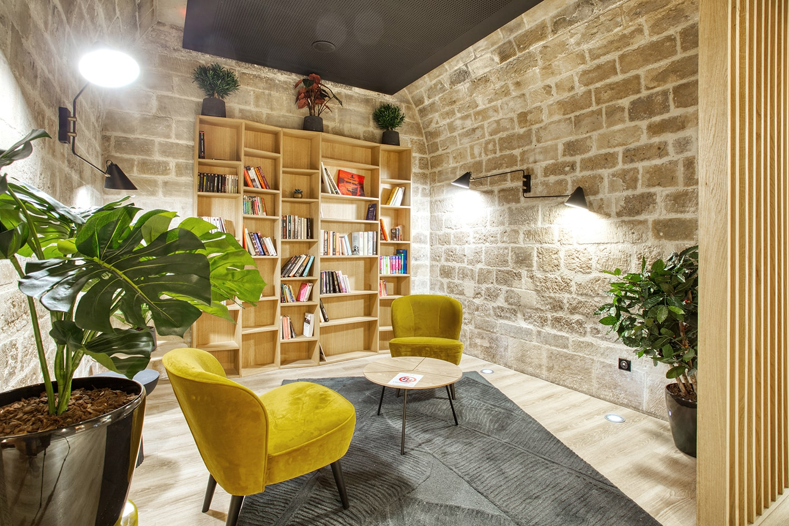

Bonjour et bienvenue sur la page 2 de mon site
Ce TP fait partie de la séance de création d'un support de communication pour la présentation d'une proposition d'équipement d'un foyer.
Si un foyer était ouvert, voici ce que j'aimerais y trouver…



Dans les images ci-dessus , on remarque à quoi pourrai ressembler le futur foyer avec une cheminée, un espace détente cozy et une salle de jeux vidéos